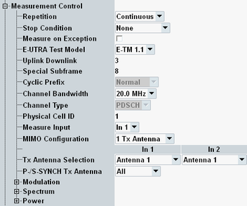

The "Measurement Control" parameters configure the scope of the measurement.

Defines how often the measurement is repeated if it is not stopped explicitly or by a failed limit check.
- Continuous: The measurement is continued until it is explicitly terminated. The results are periodically updated.
- Single-Shot: The measurement is stopped after one statistics cycle.
Single-shot is preferable if only a single measurement result is required under fixed conditions, which is typical for remote-controlled measurements. Continuous mode is suitable for monitoring the evolution of the measurement results in time and observe how they depend on the measurement configuration, which is typically done in manual control. The reset/preset values therefore differ from each other.
- "None": The measurement is performed according to its "Repetition" mode and "Statistic Count", irrespective of the limit check results.
- "On Limit Failure": The measurement is stopped when one of the limits is exceeded, irrespective of the repetition mode set. If no limit failure occurs, it is performed according to its "Repetition" mode and "Statistic Count". Use this setting for measurements that are intended for checking limits, e.g. production tests.
Specifies whether measurement results that the R&S CMW identifies as faulty or inaccurate are rejected. A faulty result occurs, for example, when an overload is detected. In remote control, the cause of the error is indicated by the "reliability indicator".
- Off: Faulty results are rejected. The measurement is continued. The statistical counters are not reset. Use this mode to ensure that a single faulty result does not affect the entire measurement.
- On: Results are never rejected. Use this mode for development purposes, if you want to analyze the reason for occasional wrong transmissions.
E-UTRA test model, as defined in 3GPP TS 36.141, section 6.1.1 "E-UTRA Test Models". The specification defines also which test model must be used for which transmitter test.
Each test model specifies several eNodeB signal properties. Select the test model according to the test to be performed and configure the signal according to the test model.
Remote command:Uplink-downlink configuration of a TDD signal, as defined in 3GPP TS 36.211, chapter 4, "Frame Structure". Each configuration defines a combination of uplink subframes, downlink subframes and special subframes within a radio frame.
Remote command:Configuration of the special subframes of a TDD signal, as defined in 3GPP TS 36.211, chapter 4, "Frame Structure". Each configuration defines the inner structure of a special subframe, i.e. the lengths of DwPTS, GP and UpPTS.
Remote command:Displays the cyclic prefix length (normal or extended), according to the selected E-UTRA test model. All test models currently defined by 3GPP use a normal cyclic prefix.
Remote command:n/a
Channel bandwidth between 1.4 MHz and 20 MHz. Set the bandwidth in accordance with the measured eNodeB signal.
Remote command:Indicates that the measurement results involving a demodulation of the signal consider only PDSCH symbols and ignore PDCCH symbols. Relevant measurement results are, for example, EVM, magnitude error and phase error results. This behavior is compatible with the 3GPP requirements.
Remote command:n/a
Adjust this parameter to the physical cell ID used by the measured LTE signal. This configuration is required to ensure that the R&S CMW can synchronize to the signal and perform channel estimation.
Remote command:Selects the measured RF input for the scenario "Two RF In".
The scenario uses two RF inputs. One of them is selected as measured input via this setting. The other one is automatically used as additional input.
Most measurement results are determined only for the measured input. Only the result view "Modulation Scalar" / "TX Measurement" provides some results for the additional input and lists the time alignment results derived from both inputs.
To measure both antenna signals, configure the measurement and measure one RF input. Then change only this setting and repeat the measurement for the other RF input.
Remote command:Specifies the number of TX antennas used by the device under test. Configure this setting according to your reference signal configuration, see also "Resources in Time and Frequency Domain".
Remote command:Specifies the number of the antenna that is connected to the R&S CMW. For the scenario "Two RF In", it specifies which antenna is connected to which RF input.
A correct setting is required to ensure that the R&S CMW can detect the reference signal.
Remote command:Selects via which antenna the synchronization signals are transferred.
This configuration is required to suppress the display of synchronization errors (two antennas used, only one antenna connected, synchronization signals transferred via the not connected antenna).
In that case, the measurement can still synchronize. But the maximum allowed frequency error range is reduced to ±7.5 kHz. A larger frequency error results in a synchronization error.
Remote command:See "Spectrum Settings".
See "Power Settings".